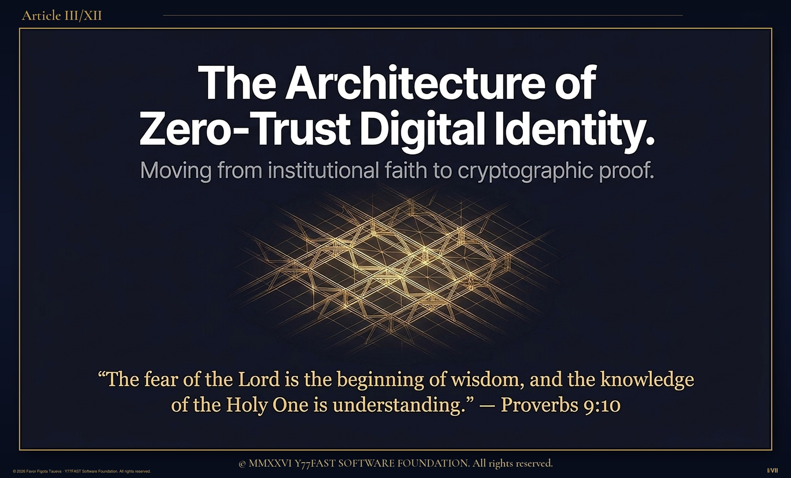
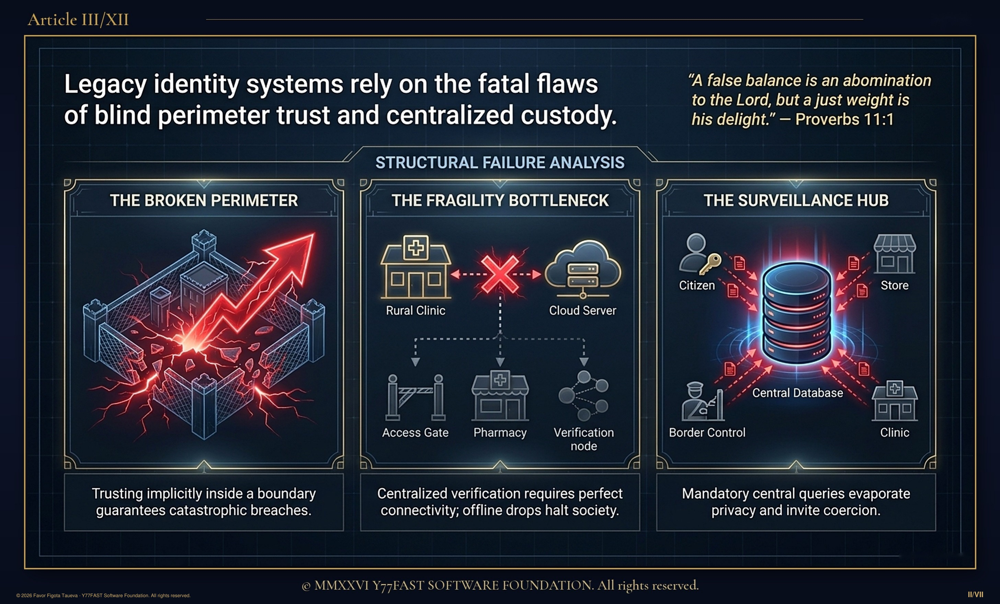
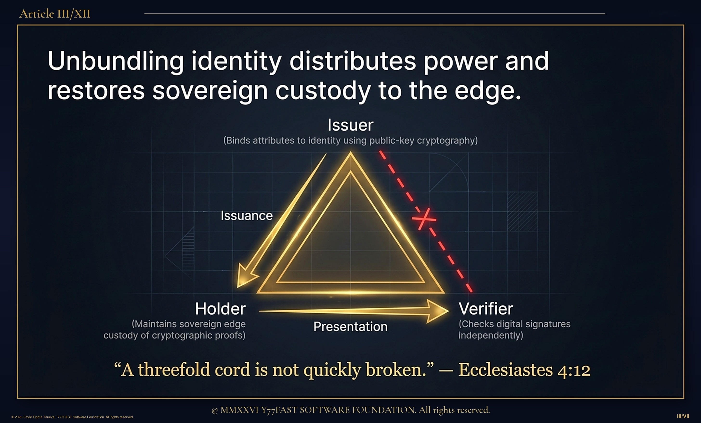
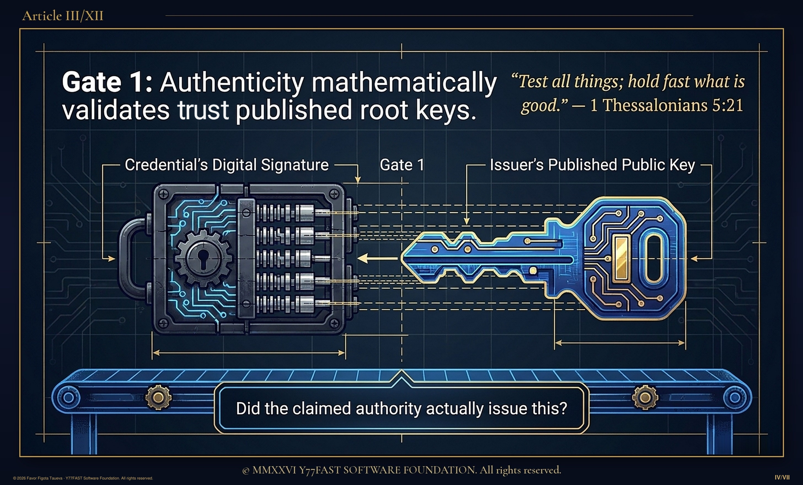
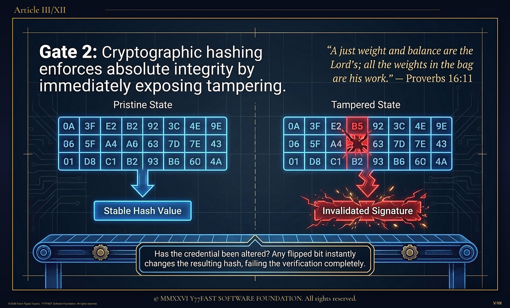
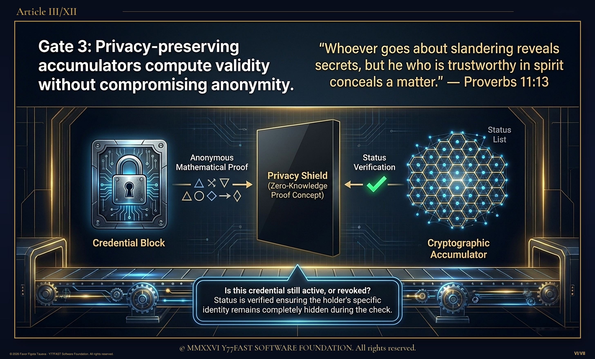
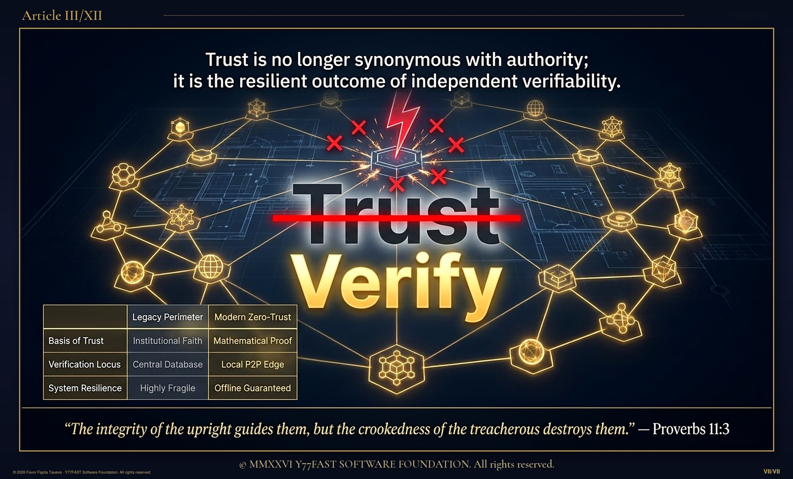

Article III/XII · DIGITAL ID
Zero-Trust Digital Identity
Trust nothing by default. Verify everything.
A digital ID should pass three gates:
- Authenticity: the signature checks against the issuer's public key.
- Integrity: the hash matches, so nothing was changed.
- Revocation: revocation is checked against a signed list.
Slides I/VII–VII/VII: download the PDF







Demo code (fake data): github.com/FavorHumanity/y77fast-digital-id-demo
Favor Figota Taueva · Founder / CEO
Y77FAST SOFTWARE FOUNDATION
SECURE · SPEED · TRUST